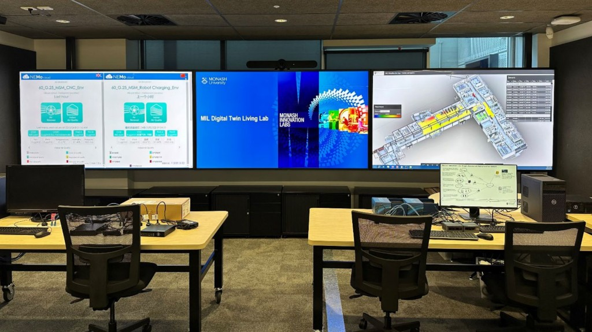
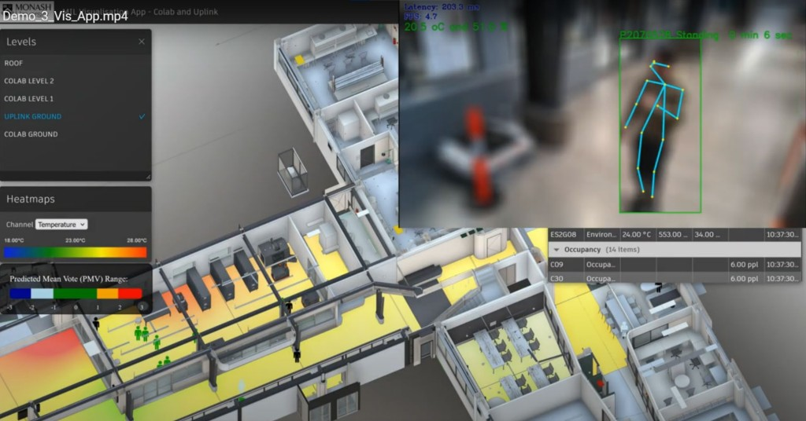
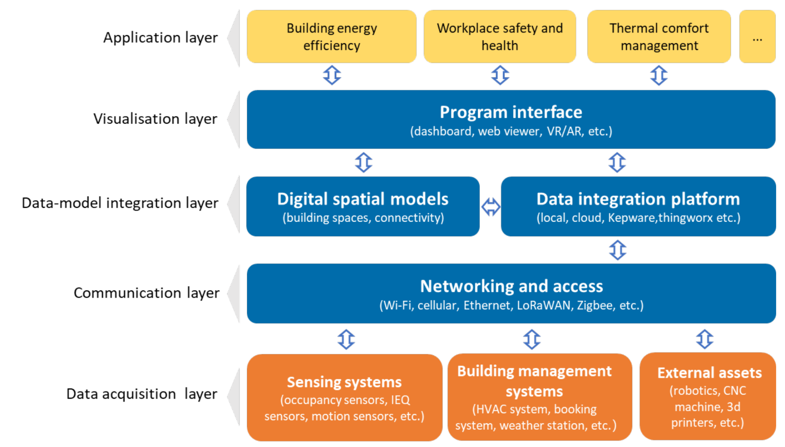

The design and development of digital twins for building operation has attracted increasing interest from both academia and industry due to their ability to capture and reflect real-time conditions of building systems, spaces and occupants. This project investigated digital twin design strategies for building operation, examined key implementation challenges, and developed recommendations to inform future digital twin projects. As part of the project, a building-scale digital twin, the Monash Innovation Labs Digital Twin (MIL-DT), was designed and implemented for a multifunctional two-storey building at Monash University, with its requirements, development considerations and technical implementation documented in detail. The completed digital twin demonstrated its value through three case studies focused on energy-efficient HVAC control, workplace health and safety, and thermal comfort analysis, generating practical lessons and insights that can help future owners and developers improve project strategies, avoid common pitfalls, and achieve more effective digital twin outcomes.


